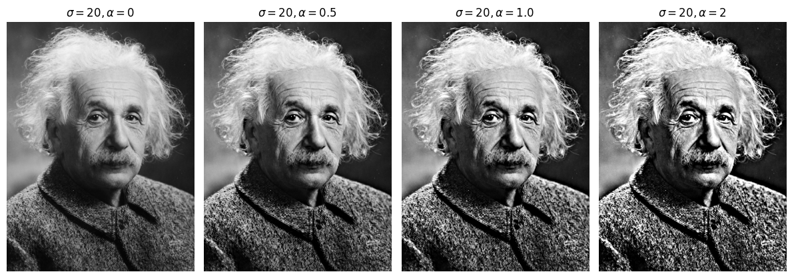
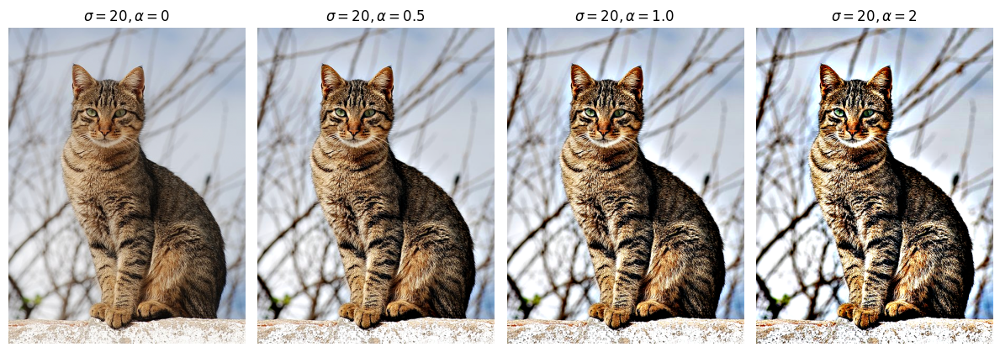
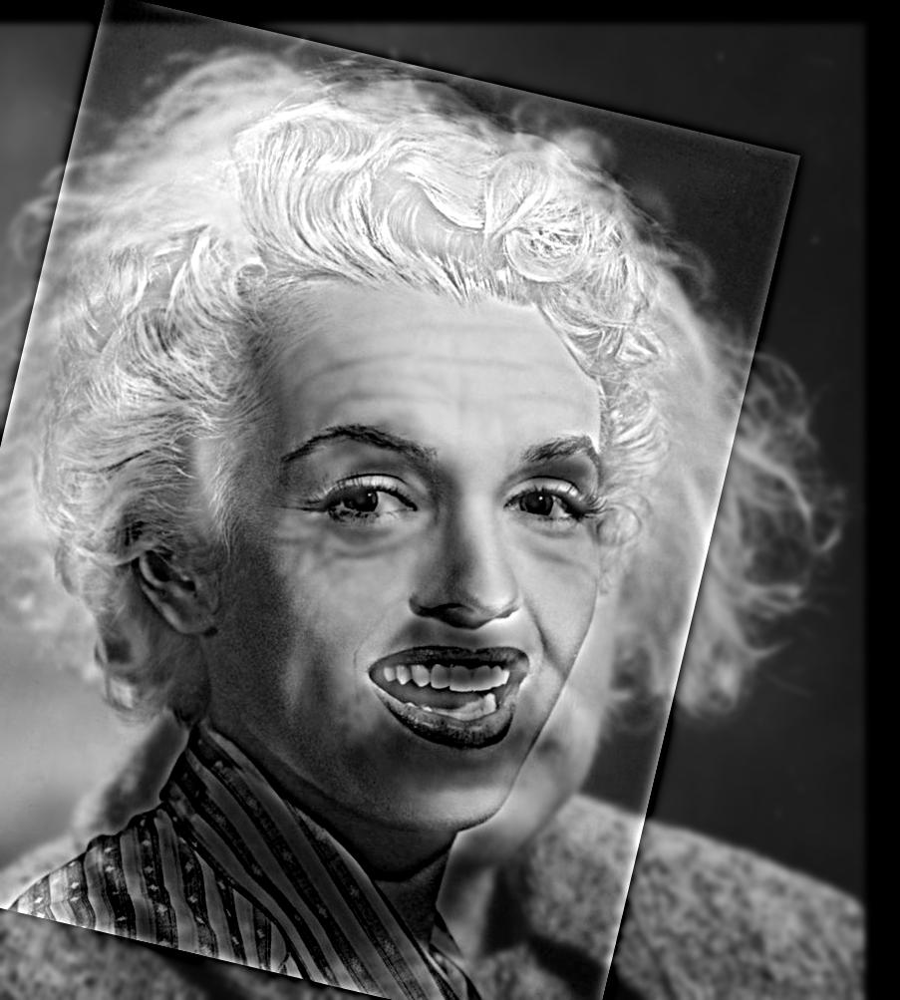
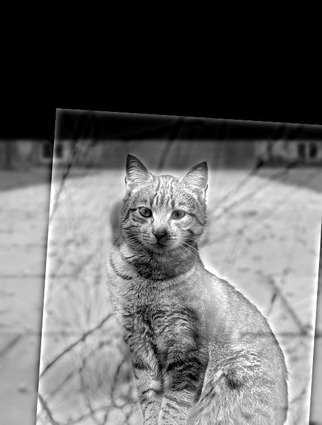
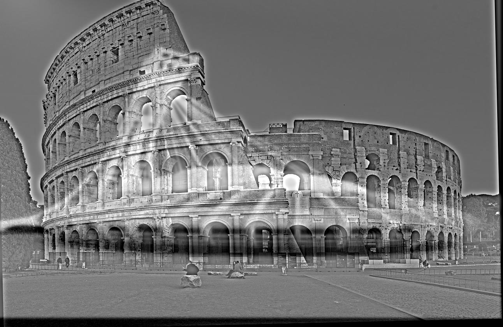
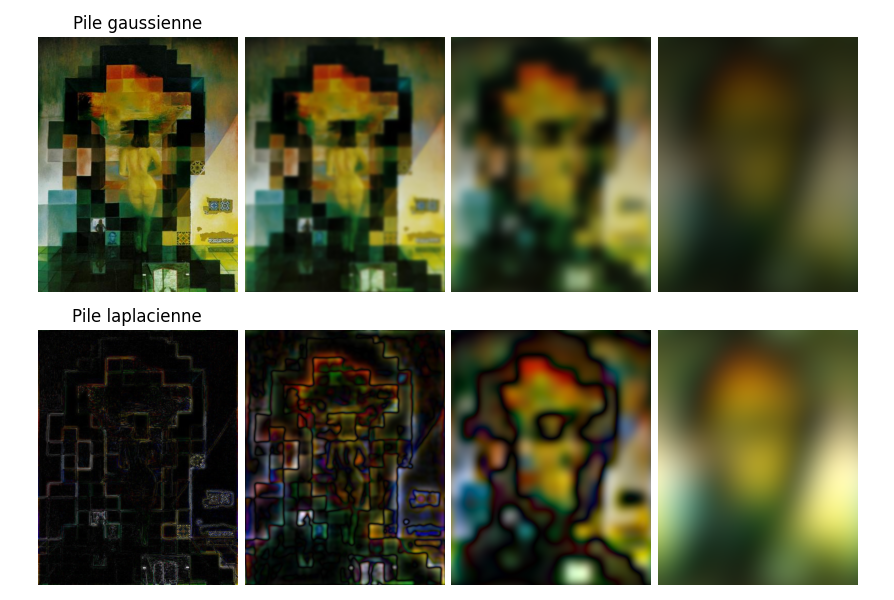
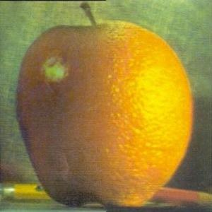

Pour effectuer l'accentuation, un filtre gaussien est convolué avec l'image. L'image filtrée est soustraite à l'image initiale afin de garder les détails. Les détails sont ensuite multipliés par un paramètre $\alpha$, puis additionés à l'image initiale afin d'accentuer les détails. Les images ci-dessous sont obtenues en variant le paramètre $\alpha$.
 Afin d'obtenir une image hybride, une première image est convoluée avec un filtre gaussien afin d'obtenir ses basses fréquences. Une seconde image est ensuite convoluée par un filtre gaussien qu'on soustrait à elle même afin d'obtenir ses hautes fréquences. Les deux images obtenues sont ensuite additionnées pour obtenir l'image hybride. Des exemples sont affichés ci-dessous.
  
La figure ci-dessous montre les images originales, les images filtrées et l'image hybride obtenue ainsi que l'amplitude logarithmique de leurs fréquences.
Afin de créer une pile gaussienne, une image est convoluée avec un filtre gaussien en augmentant sa variance entre chaque image de la pile. La pile laplacienne est ensuite obtenue par la différence entre les images subséquentes de la pile gaussienne. La dernière image de la pile gaussienne est aussi ajoutée à la fin de la pile laplacienne. La plie laplacienne représente donc des bandes de fréquences commençant par les hautes fréquences et finnissant par les hautes fréquences. La figure ci-dessous montre les piles gaussienne et laplacienne de la peinture « Lincoln et Gala » de Salvador Dali :

À noter que c'est la valeur absolue des piles laplaciennes qui est présentée afin de mieux distinguer les détails.
Le résultat des images hybrides de la partie 1 peuvent aussi générer les piles afin de distinguer les deux images utilisées.
Par exemple, les piles gaussienne et laplacienne de l'image hybride du stade olympique et du colisée de Rome sont présentées ci-dessous.
Le colisée est aperçu dans les deux premières images de la pile laplacienne alors c'est le stade qui est aperçu dans les deux dernières.
L'image du milieu est plutôt un mélange des deux.
Afin de créer un mélange multirésolution, deux images ainsi qu'un masque sont choisis. Des piles laplaciennes sont générées pour les images et une pile gaussienne pour le masque. Pour chaque résolutions, l'équation de reconstruction est appliquée : $$ I_i = m_i A_i + (1 - m_i) B_i $$ où $m_i$ est le $i$-ème masque de la pile gaussienne, $A_i$ et $B_i$ sont les $i$-èmes images des piles laplaciennes de la première et la deuxième image respectivement. Les $I_i$ sont ensuite additionnés pour obtenir le mélange multirésolution. Par exemple, la pommange ci-dessous a été obtenue avec un masque faisant divisant l'image horizontalement en deux.

Des masques irréguliers peuvent aussi être utilisés tel que pour les images ci-dessous :
Cette technique est aussi appliquée sur mes propres images :
Finalement, la figure ci-dessous montre les laplaciens masqués (gauche et centre) ainsi que les sommes des deux (droite) pour la cathédrale sur mars :
Étoile de la mort
Lune
Cathédrale Sagrada Familia
Mars
Chat
Chien
Stade Olympique de Montréal
Colisée de Rome
Conférence de Solvay de 1927
Soleil
Spirit Bomb
{kind=link}
{kind=link}
{kind=link}
{kind=link}
{kind=link}
{kind=link}
{kind=link}
{kind=link}